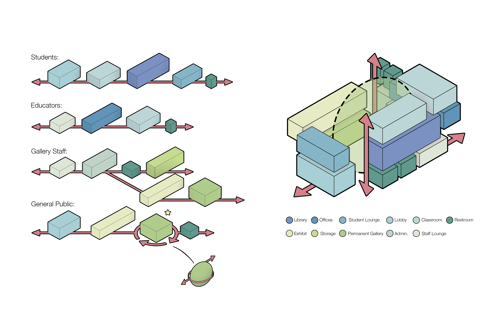
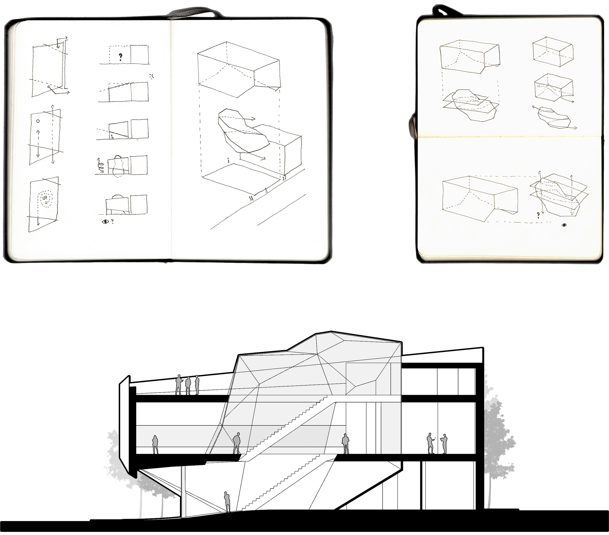
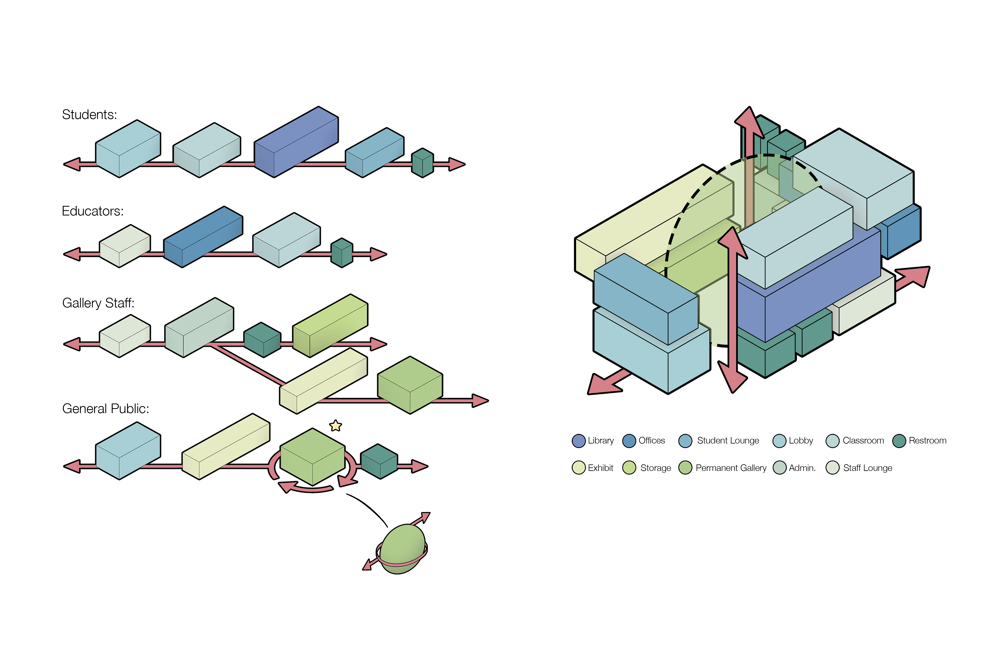
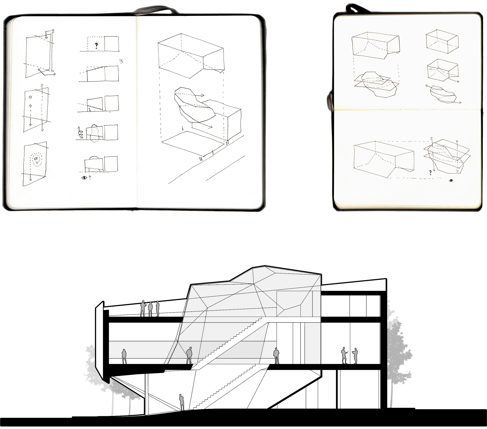

Hazelwood Gallery & Distance Learning Center Architecture Studio 1 with Jozef Petrak, University of Pittsburgh, Spring 2020 Two separate programs are integrated by identifying common conditions and exchanges with site forces (or lack thereof.) Spatial sequencing for each user group and program element are determined and combined, resulting in the definition of the permanent gallery as a central atrium and primary means of circulation.